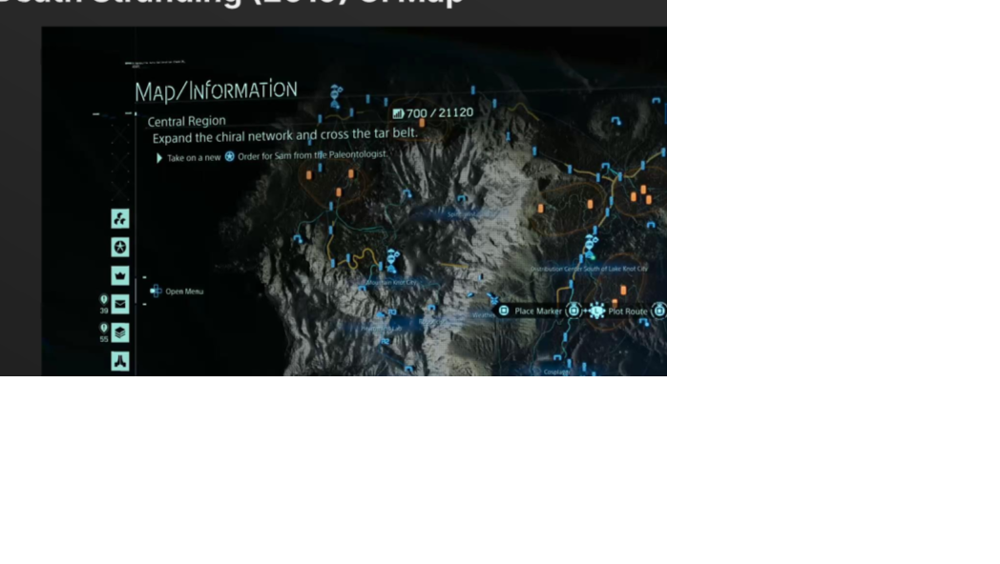
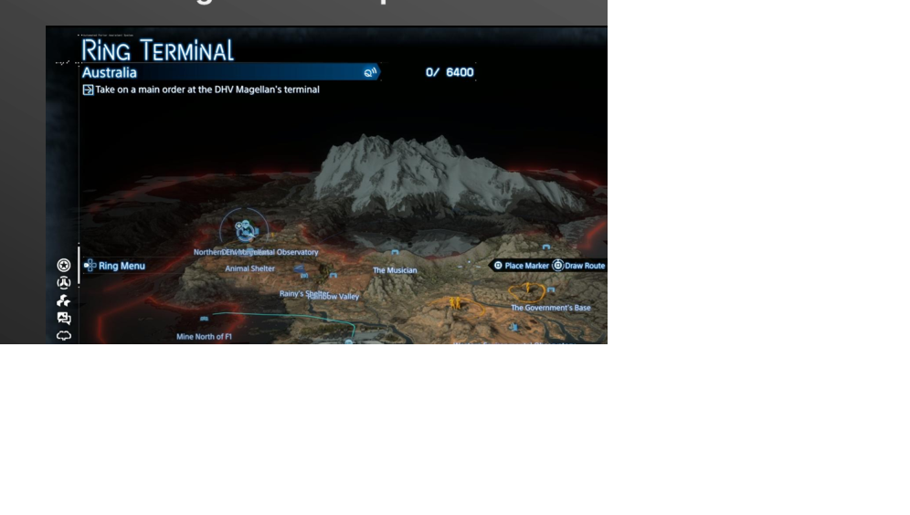
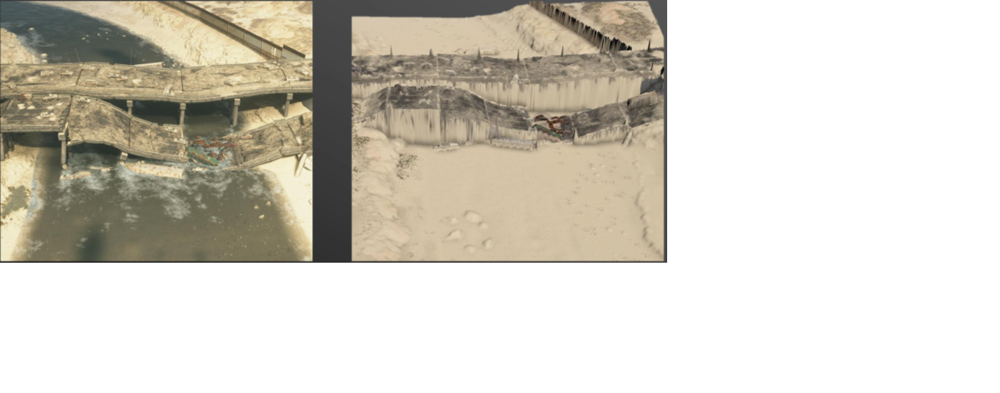
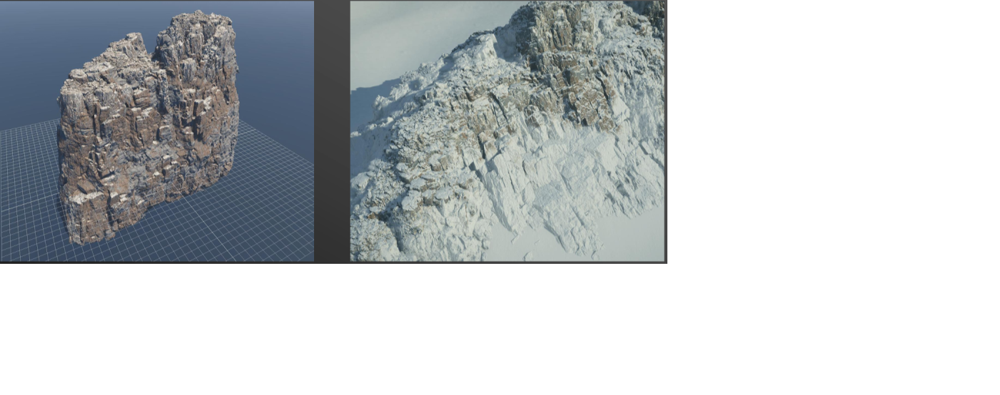
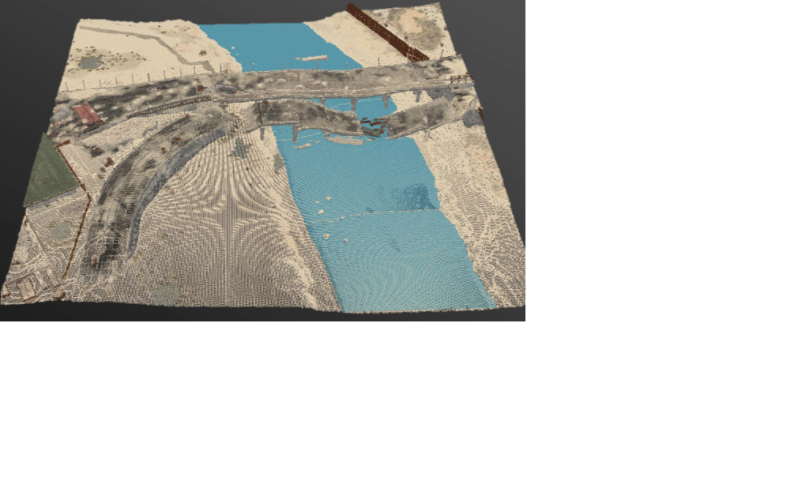

Death Stranding · 2019第一代：高度图 + 视差
缩远时平滑、信息明确；靠近后会暴露高度图分辨率，桥下、悬挑与垂直结构也无法真正成立。
PART 01 · MAP SAMPLING
按照 GDC 演讲的原始顺序，拆解《死亡搁浅 2》如何获取地图 3D 数据，以及我们在 UE 中如何复现这条采样路径。
01 · DESIGN CONTEXT

Death Stranding · 2019缩远时平滑、信息明确；靠近后会暴露高度图分辨率，桥下、悬挑与垂直结构也无法真正成立。

Death Stranding 2 · Ring Terminal地图不再只是带纵深感的平面，而要让玩家直接读出陡坡、死胡同和复杂建筑空间。
02 · REQUIREMENTS
玩家需要从地图直接判断陡坡、断崖、死胡同和建筑空间。
地图数据应从最终游戏世界自动获得，而不是再制作一套地图专用资产。
地图叠加在现有世界资源之上，必须保持较小体积并支持快速加载。
缩放与导航不能引发卡顿，渲染成本必须与游戏其余系统共存。
03 · TARGET EXPERIENCE
视角拉远，保留完整世界的自然全貌；视角拉近，逐渐看见构成世界的离散几何。
地形、路线、设施和区域边界共同服务导航决策。
山脊、桥梁、峡谷和建筑不再被压扁到单一高度层。
为了得到这种地图，第一步不是决定“怎么画体素”，而是决定“如何从最终世界获得足够完整的 3D 数据”。
04 · OPTIONS
从 Height + Color 的俯视投影恢复三维地形。
简单地形有效，但无法表达多层空间。直接导出游戏世界中已放置的 Mesh 实例。
几何精确，但拿不到最终着色结果。从多个摄像机视角渲染世界区块，并由 G-buffer 生成三维点。
同时获得空间、颜色和其他表面信息。决策标准：不仅要有几何，还要自动反映游戏中最终可见的材质混合、贴花和环境状态。
05 · ATTEMPT A

Game View ↔ Height + Color Map对普通地表，它简单、稳定、生成快速；但同一个平面位置只能保存一个高度。
GDC 中仍将它保留为正式体素地图完成前的临时占位方案。
06 · ATTEMPT B

Rocks Asset ↔ Positioned High On A Mountain导出 Mesh 可以得到非常精确的几何，但它绕过了游戏运行时的最终材质组合。
图中的同一岩石被放到高山后，最终世界会出现积雪；仅导出原资产无法得到这层结果。
07 · FINAL CHOICE

Bake Point Cloud ✓这条路线同时满足：真实三维、无需额外美术资产、可继续压缩。
08 · CAPTURE PROCESS
在区块上方半球均匀放置摄像机，覆盖主要外部表面。
摄像机沿三个坐标轴穿过区块，补足桥下、峡谷和建筑内部。
将浮点点云量化为区块包围盒内的整数索引，并合并重复位置。
09 · HEMISPHERE PASS
10 · XYZ SLICE PASS
11 · G-BUFFER TO POINTS
GDC 给出的是原则：从 G-buffer 生成 3D 点。我们的实现将它拆成可验证的五步。
物理水体采样属于 GDC 原方案；当前项目主线先完成几何与颜色采集，水体可作为独立数据通道扩展。
12 · POINT GRID
不再保存每个点的浮点世界坐标，而是记录它在区块 Bounding Box 内的整数索引。
整数索引替代浮点坐标。
重复观测合并到固定位置。
为后续体素化与渲染准备统一输入。